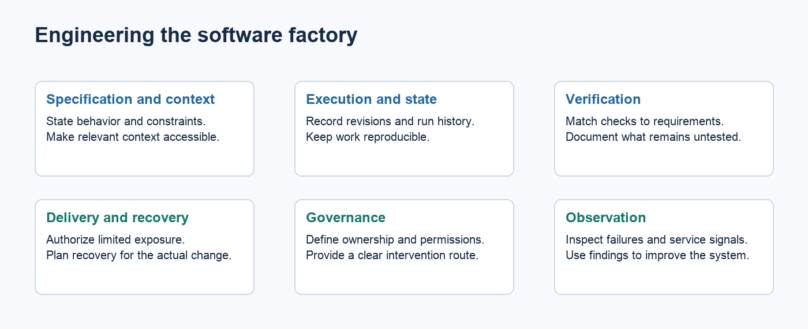
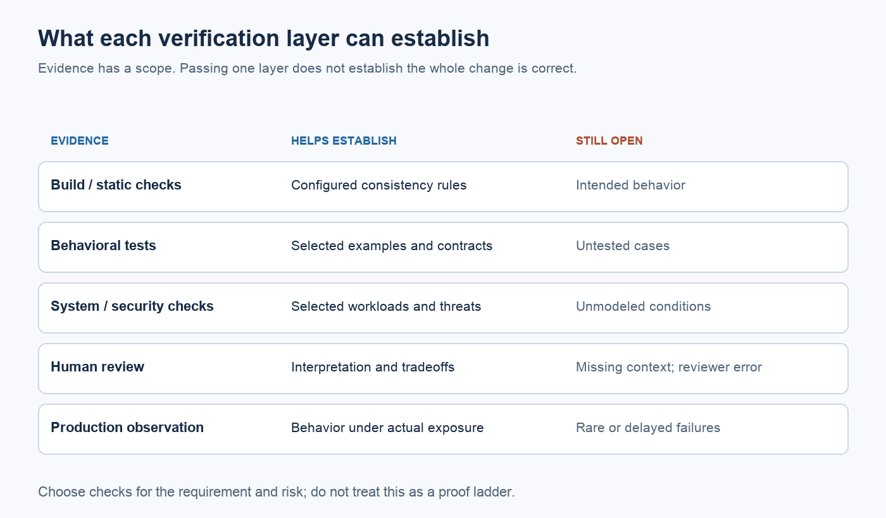
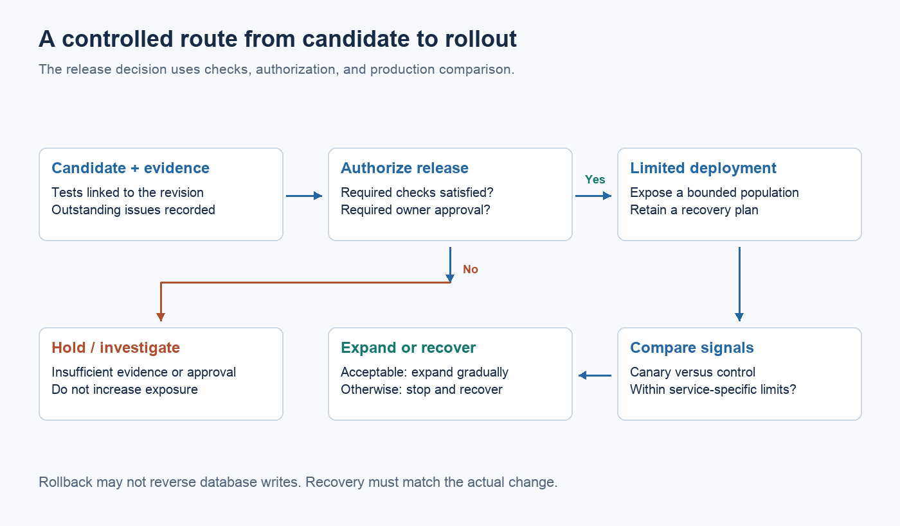

Engineering the software factory

Key points
- Start with a repeated delivery problem and define the system's responsibilities before choosing an agent framework.
- Specifications should state intended behavior and the evidence required to accept a change.
- Context needs ownership and freshness; larger prompts aren't a substitute for reliable information.
- Use ordinary software for workflow rules and models for tasks requiring interpretation.
- Verification, controlled delivery, and human intervention need to be designed together.
- Measure the cost of accepted changes and failures across the process.
Building a software factory means taking responsibility for what happens between a request and a maintained production change. Choosing a model is one decision inside that job. It doesn't tell you how the system should handle conflicting requirements, failed checks, or a release that needs to be stopped.
A useful first version can be small. Take one repeated class of work, define its boundary, and engineer a dependable route through it. A sprawling framework with unclear failure handling is harder to trust than a narrow workflow whose behavior the team understands.
Define what enters and what leaves
Suppose the first workflow handles routine dependency updates in one service. Its input includes the proposed version and update policy. Its output includes a patch, test results, and a record of the dependency changes. Acceptance requires a named set of checks; release follows the team's existing authorization process.
That boundary excludes updates requiring application redesign. An agent can identify one of those cases and stop with an explanation. Stopping is a valid outcome when the alternative is guessing.
Assign an owner to the workflow itself. Someone has to maintain the environment and respond when the update process stops working. Otherwise a supposedly shared capability becomes a queue nobody owns.
Specify behavior before generating code
A task needs enough detail to tell an executor what to change and a reviewer how to judge the result. Include constraints that could invalidate an otherwise plausible implementation.
For an API change, that might mean preserving response behavior for existing clients and meeting a latency budget. Translate stable requirements into contract tests where possible. Keep the reasons behind those tests available, because a passing suite cannot cover an intent nobody expressed.
Separate a proposed plan from accepted requirements. An agent may discover a better implementation approach. It should not silently redefine the customer requirement to suit that approach.
Security belongs in the same design. NIST's final SSDF version 1.1 describes practices that can be integrated into different development lifecycles. It is guidance for secure development, not a certification of an agent workflow. NIST SP 800-218
Treat context as maintained infrastructure
A context system should help an executor find authoritative information about the part of the system it is changing. Architecture decisions need dates and owners. Generated summaries should retain links to the source and indicate when they were refreshed.
Conflicts deserve explicit handling. A current contract and an old design document may disagree. The agent needs a rule for identifying the authority or a way to ask the owner. Returning both documents without explanation exports the problem into every execution.
More text is not automatically better. Liu and colleagues found positional sensitivity in long-context retrieval tasks: models did not use information uniformly across an input. That older study doesn't quantify today's coding-agent behavior, but it supports evaluating retrieval rather than assuming capacity guarantees comprehension. Lost in the Middle
Repository instructions need the same discipline. Gloaguen and colleagues' 2026 evaluation found that context files did not generally improve task success in their tested settings, while increasing inference cost. Test useful guidance against real tasks and remove material that adds cost without helping. Evaluating AGENTS.md
Coordinate execution with ordinary software
Decompose work around stable interfaces and explicit dependencies. If a migration changes both producer and consumer, establish the compatibility sequence before running either change. Independent work can run concurrently; dependent work needs coordination.
Keep workflow state outside the agent's conversation. Record which revision a task started from, what artifacts it produced, and which checks ran against that result. A resumed task should not rely on a model remembering whether a deployment happened.
Rules such as retry limits, timeouts, and approval requirements are ordinary software. Let the workflow enforce them. Use a model to interpret an unfamiliar failure or propose a repair when that requires judgment.
Agentless demonstrates that a constrained sequence can be competitive on issue-repair benchmarks. It provides a reason to compare a simple process with a more elaborate one, rather than treating orchestration complexity as capability. Agentless

*Verification map: checks establish scoped claims, not complete correctness. Informed by NIST SSDF and Gu et al..*
Figure sources and methodology
Build verification around the claim being made
Start with inexpensive checks that can catch mechanical mistakes. Then evaluate behavior and the properties that matter to the system. A build establishes that a candidate builds; it says little about whether an authorization rule is correct.
| Evidence | What it helps establish | What remains open | | --- | --- | --- | | Build and static checks | Basic consistency with configured rules | Intended behavior | | Unit and contract tests | Specified behavior at selected boundaries | Untested cases and combined changes | | System and security checks | Selected operational properties | Conditions the checks don't model | | Human review | Interpretation and consequential tradeoffs | Human mistakes and missing context | | Controlled production rollout | Behavior under actual use | Rare or delayed failures |
Use AI review as another source of feedback. It should not be the only evidence for a claim made by the generator, particularly when both use the same assumptions.
SWE-bench evaluates patches against repository tests for issue-resolution tasks. It is a useful example of executable evaluation, with a boundary much narrower than a complete release decision. Princeton's benchmark explanation
Design autonomy with recovery

*Proposed rollout workflow based on NIST SSDF and Google SRE. Recovery depends on the change; rollback is not always sufficient.*
Figure sources and methodology
Before granting a workflow more authority, ask how the team will detect and recover from a bad result. A reversible configuration change with strong checks is different from a destructive data migration. A nominal rollback command may not undo writes already made to a database.
Use progressive rollout where the service and its traffic allow it. Google's SRE workbook describes canarying as a limited deployment evaluated before wider release. That provides production evidence while reducing exposure; it does not eliminate deployment risk. Canarying releases
Permissions should match the task. Execution needs an identity and an audit trail. Where a policy must hold, enforce it at the tool or deployment boundary instead of relying on a prompt to remember it.
Give humans a usable way to intervene
An escalation should explain the unresolved question and provide the evidence needed to answer it. A transcript dump leaves the engineer to reconstruct the work. A concise account of the failing check, attempted repairs, and current diff is more useful.
Bainbridge's *Ironies of Automation* warns that automation can leave operators with difficult abnormal conditions. Although it predates coding agents by decades, the concern applies when a workflow expects a person to rescue a failure they haven't been following. Automatica
Make it possible to stop work and inspect state. Keep the engineer's authority clear. A human approval step needs time and information to function.
Improve the system from its failures
Record execution costs and failures, including unsuccessful tasks. Measure time to an accepted change, review effort, and escaped defects. An impressive first-pass rate can hide a large cleanup burden if the acceptance checks are weak.
When a failure recurs, decide whether the fix belongs in context, a tool, or a test. Keep a representative set of past tasks to check that the improvement helps without damaging other work. Evaluate changes to the factory itself before expanding their use.
Start with a boundary you can support. Broaden it when evidence shows that the system handles the work and the team can recover when it doesn't. The useful result is a maintained capability with known limits, rather than a demonstration that depends on everything going right.
---
Research and scope
The architecture and examples are proposals. Benchmarks and older automation research inform the design but do not validate the factory as a whole. The cited NIST document is final version 1.1; version 1.2 is listed as an initial public draft in the reviewed record. See References.md for details.